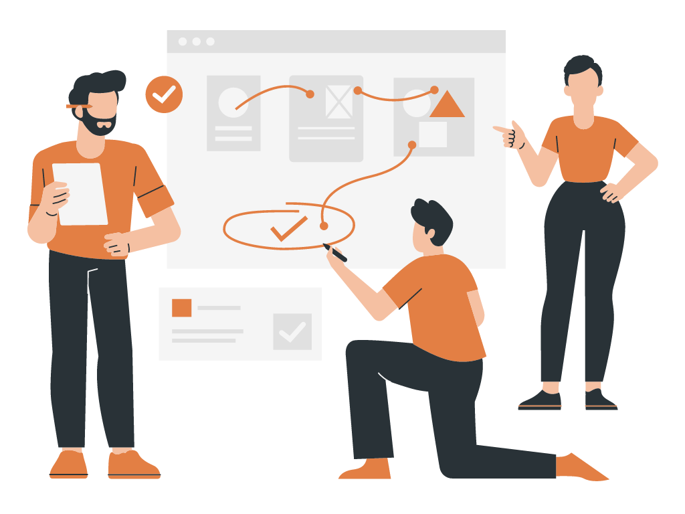

¿Qué es?
La metodología RAD, o modelo de desarrollo rápido de aplicaciones, es un método de desarrollo de aplicaciones de software basado en creación de prototipos sin una estructuración ni planificación específica. En cambio, se priorizan las tareas de desarrollo, las cuales deben ser desarrolladas en cortos periodos de tiempo, por lo que la opinión de los usuarios y el propio uso del programa es más importante que la planificación estricta durante su desarrollo.
Este modelo se introdujo por primera vez en el año 1991 por James Martin, y ha ganado popularidad hasta convertirse en uno de los métodos de desarrollo más potentes de la actualidad. El autor engloba cuatro factores principales que dan forma al modelo RAD: Personas, Herramientas, Metodología y Gestión.
Etapas.
La RAD como metodología es muy interesante y ofrece un amplio abanico de posibilidades a sus
usuarios, ya
que se centra en mejorar los procesos a través de una constante revisión del feedback proporcionado
por el
cliente. Veamos sus fases y desarrollo.
-
• Requisitos del proyecto: La primera etapa consiste en hacer un planteamiento global del proyecto en cuestión, concretando sus requisitos principales a cumplir: objetivos, plazos, presupuesto, expectativas… Una vez realizada esta planificación inicial, la dirección debe aprobarla antes de comenzar a desarrollar el software.
Imagen extraida de Canva. Fuente: Canva
-
• Diseño de los prototipos: La primera etapa es totalmente necesaria para comenzar con el diseño de los prototipos, ya que nos permite medir el alcance y las condiciones necesarias para su debida puesta en marcha. Con ello, los profesionales tendrán que trabajar junto a los clientes para llevar un buen desarrollo de los prototipos, buscando siempre ofrecer la mejor solución final posible.
Imagen extraida de Canva. Fuente: Canva
-
• Feedback del usuario: En fases beta y prototipos, es imprescindible efectuar una amplia recopilación de la información que nos proporcione el usuario de la aplicación. Se trabajará con base en esta información, mejorando los prototipos y respondiendo a las exigencias y demandas del cliente.
Imagen extraida de Canva. Fuente: Canva
-
• Prueba del producto: Antes de dar el proyecto por finalizado, es necesaria una fase exigente de pruebas, para comprobar que todas las exigencias y requisitos planteados en el primer punto se cumplen y la calidad del producto es óptima. No debemos dejar de tener en cuenta las opiniones del cliente, ya que estas nos seguirán sirviendo para optimizar el funcionamiento y ajustarlo a sus necesidades.
Imagen extraida de Canva. Fuente: Canva
-
• Presentación de la aplicación y lanzamiento: Tras finalizar las comprobaciones y asegurarnos de que el producto cumple con los requisitos, es el momento de presentarlo, convirtiendo los datos y formando al usuario para que tenga todas las capacidades necesarias a la hora de utilizarla, y, posteriormente, lanzarla definitivamente.
Imagen extraida de Canva. Fuente: Canva
Roles.
La metodología RAD no cuenta con roles específicos de esta, aún así es importante aclarar que todas las metodologías de desarrollo de software cuentan con roles básicos, los cuales son:
- Administrador del Proyecto (AP)
- Responsabilidades del AP:
- • Realizar la planeación del proyecto (Junto con el equipo).
- • Ejecutar, dar seguimiento y controlar el proyecto.
- • Identificar necesidades específicas de capacitación (manejo de MsProject, Flash, Dreamweaver, Ms Visio, etc.) y asignar el tiempo para capacitarse.
- • Identificar, analizar y monitorear riesgos.
- • Dar seguimiento al proyecto y generar reporte de avance.
- • Preparar y realizar las reuniones de revisión interna conforme a la frecuencia establecida.
- • Asignar, actualizar el trabajo que hayan sido distribuido entre el personal a su cargo.
- • Apoyar en el desarrollo del proyecto.
- Administrador la configuración del proyecto (ACP)
- Responsabilidades del ACP:
- • Crear el Plan de Desarrollo de Software.
- • Revisar el contenido del proyecto.
- • Ejecutar y monitorear las actividades de planeación, implementación de los elementos del proyecto.
- • Realizar pruebas de integración, incluyendo los elementos multimedia.
- • Ejecutar y reportar actividades de pruebas en el proyecto.
- • Apoyar en el desarrollo del proyecto.
- Analista de Sistemas
- Responsabilidades del Analista de Sistemas:
- • Realizar el análisis del problema, entender las necesidades del cliente, definir el alcance del software y refinar su definición.
- • Definir el alcance del software.
- • Analizar el problema y acordarlo con los interesados del proyecto.
- • Entender las necesidades del cliente y establecer características para satisfacer las necesidades.
- • Definir el sistema y refinar la definición del sistema.
- • Administrar los cambios a los requerimientos durante todo el proyecto.
- • Convertir escenarios a objetivos.
- • Bosquejar la estructura de objetivos.
- • Elaborar el modelo de desarrollo.
- • Definir formalmente el modelo de desarrollo.
- • Apoyar en el desarrollo del proyecto.
- Diseñador
- Responsabilidades del Diseñador:
- • Diseñar los elementos de la arquitectura.
- • Revisar elementos implementados.
- • Investigar los elementos multimedia que serán utilizados en el proyecto.
- • Diseñar el paquete del proyecto final.
- • Diseñar interfaz de usuario.
- • Apoyar en el desarrollo del proyecto.
- Integrador
- Responsabilidades del Integrador:
- • Realizar el plan de integración.
- • Seleccionar los componentes a ser integrados.
- • Ensamblar el entregable.
- • Probar el entregable
- Cliente
- Responsabilidades del Cliente:
- • Negociar los ajustes a realizarse al proyecto en conjunto con el Líder de proyecto.
- • Aprobar el prototipo entregable.
- • Aprobar y confirmar el compromiso del documento del alcance del proyecto.

Imagen extraida de Canva. Fuente: Canva
Ventajas.
El modelo de desarrollo rápido de aplicaciones cuenta con varias ventajas notables e interesantes para los profesionales del sector:
-
• Integración de sistemas temprana. El modelo RAD no necesita esperar al final del proceso para comenzar a realizar integraciones con otros servicios, ya que estas se realizan de forma temprana para detectar errores y resolverlos inmediatamente.
-
• Progreso evaluable.Gracias a las iteraciones ejecutadas de manera constante, tendremos la posibilidad de medir el avance del progreso en cualquier momento, pudiendo evaluar el cumplimiento de los requisitos.
-
• Feedback constante. Los comentarios y opiniones de los usuarios son una de las grandes claves de este proceso, por lo que la retroalimentación que se exige es constante a lo largo del mismo, consiguiendo que el proyecto se evalúe frecuentemente durante su desarrollo.
-
• Menor codificación manual dada la reutilización y el uso de generadores de códigos. En consecuencia, se pueden generar códigos perfectamente productivos en un plazo menor de tiempo.

Ventaja. Fuente: Freepik.
Desventajas.
Por supuesto, no todo podía ser perfecto y, como cualquier otro método de desarrollo de software, el método RAD tiene algunas desventajas que también hay que tener en cuenta a la hora de elegirlo para trabajar.
-
• Requiere sistemas modulares. Cuando aplicamos el método RAD, cada componente del sistema debe ser iterable y constatable por sí mismo, para poder ser modificados o intercambiados por cualquier miembro del equipo.
-
• Dificultad dentro de proyectos a gran escala. Cuando estemos ante un proyecto que implique muchas personas y aplicaciones, la flexibilidad puede llegar a ser un problema puesto que perderemos ligeramente el control sobre el diseño y el desarrollo.
-
• Exige mucha interactividad del usuario. Conseguir feedback del usuario desde una etapa temprana es muy útil pero, a la vez, puede ser una espada de doble filo ya que tendremos que aceptar todo tipo de críticas constructivas y ser competente a la hora de comunicarse con los usuarios.
-
• Necesidad de desarrolladores senior. Aplicar la metodología RAD no es tan fácil como parece, por lo que en el equipo serán necesarios desarrolladores hábiles que sean capaces de aplicar y adaptarse a cualquier necesidad o cambio.
Desventaja. Fuente: Freepik
¿Dónde se utiliza?
-
• Cuando se dispone de menos tiempo para la creación del producto, como por ejemplo en un lapso de pocos días, se utiliza el modelo Rapid Application Development (Rad).
-
• Se utiliza cuando ya se ha tomado una decisión sobre los entregables y los requisitos.
-
• Los modelos de desarrollo rápido de aplicaciones (Rad) pueden utilizarse cuando se da al usuario final o al cliente la opción de participar en todas las fases del ciclo de vida del producto; esto se conoce como "participación del cliente o del usuario".
-
• Se puede utilizar en caso de que el presupuesto sea lo suficientemente amplio; será posible contratar diseñadores. Para desarrollar códigos con herramientas automatizadas, que exigen un mayor presupuesto, es necesario disponer de un presupuesto mayor.
Video explicativo.
Ya conociste un poco más acerca de la metodología RAD. A continuación podrás encontrar un video que podrá ayudarte a comprender mejor la información presentada anteriormente.